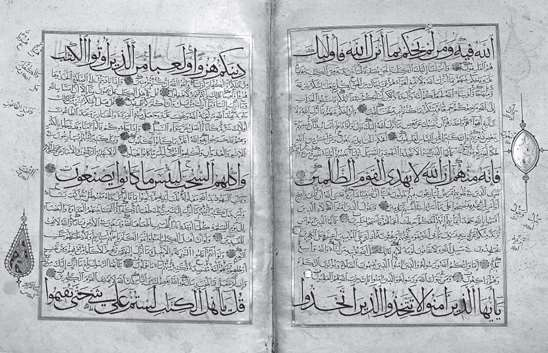
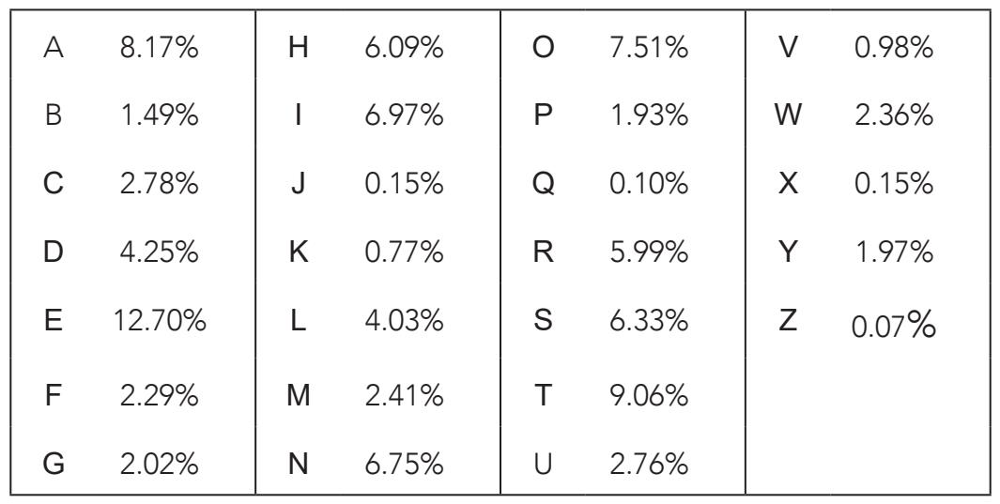
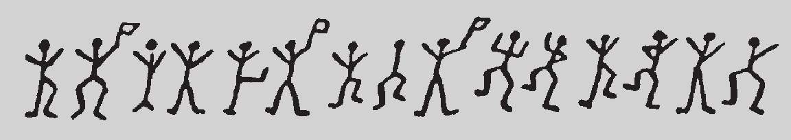

《古兰经》共30卷，114章，每一章都对应先知穆罕默德得到的一个启示。这些启示都成文于先知归真之前，由先知的多个追随者执笔，后由第一任哈里发阿布·伯克尔整理，第二任和第三任哈里发，即奥马尔和奥斯曼依次编纂完成。由于原稿是断断续续写完的，因此兴起了神学的一门新学科，专门研究不同启示诞生的准确日期。古兰经学者运用当时的年代测定技术，汇编了某些词语出现的频率，认为它们是在编书时期创造的新词。如果一个启示中包含这些新词，就足以合理地得出结论，这篇启示出现得相对较晚。
这项研究后来促成了第一代密码分析工具的发明：频率分析。记录这一革新技术的第一人是哲学家肯迪，他于801年出生于巴格达。虽然他有多个头衔——天文学家、医生、数学家和语言学家——但历来为人熟知的却是密码破译者。即使肯迪不是史上第一位密码破译者，那他至少是最重要的一位。

14世纪的手抄本《古兰经》。
肯迪的开创地位直到近些年才渐为人知。1987年，以他的名字署名的专著《论解密加密信息》（On Deciphering Cryptographic Messages）在伊斯坦布尔的一家档案馆浮出水面。书中对于这项独创的技术有一段简要摘录：
对于一条加密信息，如果我们懂得它的语言，那么其中一个解密方法就是找出一份用相同语言书写的足够长的明文，然后数出每个字母出现的次数。频率最高的字母，我们称之为“第一”，其次为“第二”……诸如此类，直到把明文中出现的所有字母都囊括为止。接着观察要解密的加密文本，用同样的方法给文本中的符号分类。对出现频率最高的符号，我们用文本中的“第一”个字母替换，然后是“第二”个，如此，直到把解密的所有密码符号都覆盖为止。
在书的前几页中，他提到替换加密法让原文中的每个字母“位置不变，但样子改变”，正是因为这一成不变的“位置不变”，使得它在频率分析面前不堪一击。肯迪的天才之处就在于反转了加密者和解密者之间的力量天平，至少在一段时期内，天平倾斜向了解密者。
英文字母表中，使用频率从高到低依次为：E T A O I N SH R D L C U M W F G Y P B V K J X Q Z，每个字母出现的百分比如下表所示：

假如一条信息用我们之前讨论过的替换算法加密，那么根据原始信息中字母出现的相对频率就可以破解。数一下加密信息中每个字母出现的次数，与所使用语言的频率表对比一下就行了。因此，如果一个字母在加密信息中出现的频率最高，假设这个加密字母是J，那么它对应的原始信息中的字母很可能就是E。同理，频率第二的字母若是Z，那么它对应的字母很可能是T。对加密信息中的所有字母重复同样的过程，这样一来，密码分析就完成了。
很明显，频率方法通常无法像这样直接应用。前面表格中的频率也只是以平均计。比如，信息“Visit the zoo kiosk for quiz tickets”很短，字母的出现频率与整个语言的平均频率特点是不同的。
密码破译者：夏洛克·福尔摩斯
频率分析解密技术颇具戏剧效果，吸引了众多作家的注意。或许，在以密码分析为蓝本写作的小说中，最著名的就是1843年埃德加·爱伦·坡（19世纪美国诗人、小说家和文学评论家）创作的《金甲虫》。爱伦·坡在书末附录中详细记述了一条自己虚构的加密信息，利用频率分析破解，过程天衣无缝。儒勒·凡尔纳（法国作家，被誉为“科幻小说之父”）及阿瑟·柯南·道尔为增加悬疑气氛，在创作故事主线中也用了同样的手法。在《小舞人探案》（The Adventure of the Dancing Men）中，柯南·道尔让主人公夏洛克·福尔摩斯碰到了一道替换加密的难题，迫使这位侦探研究起频率分析。可见肯迪的天才之作，即便在时过境迁1 000多年后，依然能够让市井百姓痴迷不已。

《小舞人探案》中夏洛克·福尔摩斯必须要破解的第一条加密信息，在这里我们就不详述解密过程了，以免给想读这本书的读者透露了故事情节。只消说一点：小舞人手中挥动的小旗是密码构成的一个重要因素。
实际上，这种简单的分析在破译少于100字符的信息时很少用得上。不过，频率分析并不局限于对字母本身的研究。在一条短信息中，使用频率最高的字母通常不可能是E，尽管我们同意这种说法，但我们可以更确定地说，在不知道字母对应的前提下，使用频率最高的前五个字母为A、E、I、O和T。英语中，A和I从不以成对的方式出现，但其他字母会。而且，同样可能的是，无论信息多短，元音字母通常出现在其他字母集合的前后，而辅音字母则与元音字母或少数字母组合在一起。这样一来，我们或许能够将T与A、E、I、O区别开来。由于我们成功破解了一些字母，因此只需要再解密一到两个字符，单词就可以拼写出来了，这将允许我们对那些字母的身份做出假设。破解的字母越多，破解的速度就越快。